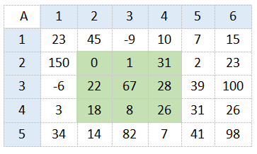
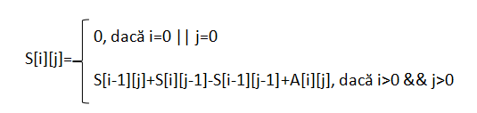
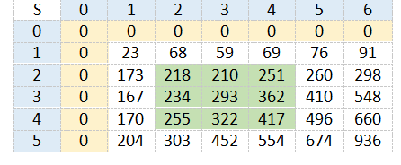
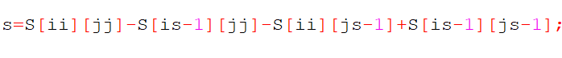
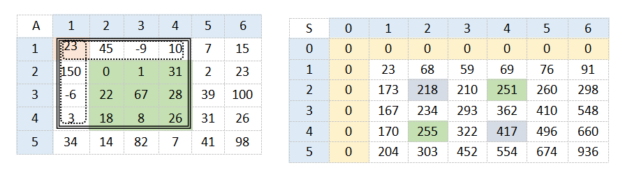

Considerăm un tablou bidimensional cu elemente numerice. În unele probleme se cere să se determine rapid suma elementelor din anumite secvențe date. Desigur, o soluție este parcurgerea tuturor elementelor din secvență și determinarea sumei, dar această operație are complexitatea O(n), iar dacă numărul de sume care trebuie calculate este mare soluția poate fi inacceptabilă.
Astfel, în această situaţie putem folosi sumele parţiale. Pentru aceasta avem nevoie de o matrice auxiliară S[][].
Considerăm matricea A cu 5 linii şi 6 coloane.
Pentru această matrice vrem să calculăm suma elementelor din submatricea cu colţul stânga-sus de coordonate (2,2) şi colţul din dreapta-jos de coordonate (4,4).
Folosind martricea S, vom obţine S[i][j] ce reprezintă suma elementelor din submatricea cu colţul stânga-sus la coordonatele (1,1) şi colţul dreapta-jos la coordonatele (i,j).
Formula prin care se construieşte matricea S:
Matricea sumelor parţiale pentru matricea A este:
Pentru a obţine suma elementelor din submatricea cu colţul din stânga-sus la coordonatele (is,js) şi colţul din dreapta-jos de coordonate (ii,jj) vom aplica următoarea formulă:
Aceasta se explică astfel:
*Se scade din toată submatricea de coordonate stânga-sus (1,1) şi (ii,jj) submatricile cu colţul stânga-sus (1,1) şi dreapta-jos (is-1,jj) şi cea cu colţul stânga-sus (1,1) şi dreapta-jos (ii, js-1), după care se adună submatricea cu colţul stânga-sus (1,1) şi dreapta-jos (is-1,js-1), întrucât aceasta se scade de două ori.*